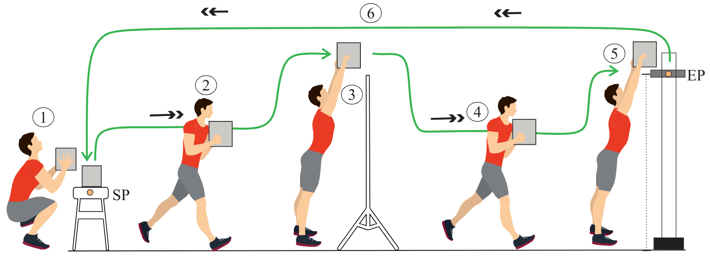

Exoskeletons and Augmented Reality: Opening Pathways to Improved Coordination in Collaborative Tasks

Venue. INTERACT (2025)
Abstract. Exoskeletons are designed to enhance users' strength in physically demanding tasks, such as lifting and carrying heavy objects. Despite increasing physical ability, exoskeletons can introduce mechanical constraints on joint articulation, restricting certain movements. These limitations can reduce the range of motion, alter natural movement patterns, and decrease agility. This can particularly impair collaborative tasks that require movement coordination. Since industrial applications of exoskeletons also involve teamwork, it is important to find ways to support users in maintaining coordination and mitigating the side effects that are introduced with exoskeletons. To explore solutions to this problem, we developed a system that integrates AR-based motion guidance to assist users wearing exoskeletons in collaborative object-handling tasks. Our approach leverages immersive visualizations to facilitate coordination, assisting users in maintaining alignment and executing movements more smoothly. We conducted an exploratory study involving 40 participants, divided into pairs, to examine the feasibility and challenges of this approach. Our findings uncover key considerations for motion guidance evaluation in object collaborative handling tasks, the impact of the participants' pairing strategies, and technical challenges.
Link to this page: